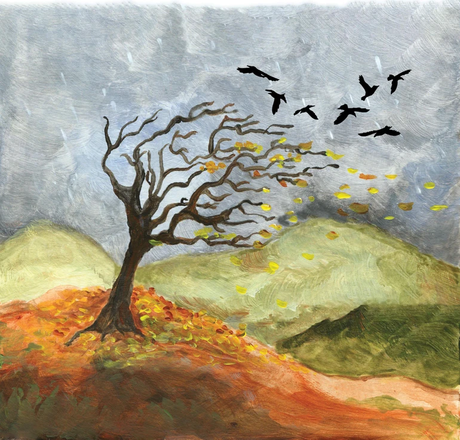

Anh cũng biết, thức khuya chẳng phải điều hay, nhưng thành nếp quen rồi, khó lòng bỏ được trong một sớm một chiều.
Vậy mà sáng hôm kia, chẳng hiểu vì cớ gì, Hoàng bỗng choàng tỉnh khi trời vừa ửng sáng. Có lẽ anh vừa thoát khỏi một giấc mơ chập chờn, cố nhắm mắt lại cũng không sao ngủ thêm được. Thôi thì dậy vậy. Anh khẽ gạt tấm chăn, rón rén rời khỏi giường để khỏi làm vợ con thức giấc. Bước ra phòng khách, anh rót một cốc nước, rồi thong thả đứng tựa nơi khung cửa sổ. Ngoài kia, bình minh đang lên, sắc hồng nhuộm nhẹ vòm trời, gió sớm hiền hòa. Một buổi mai yên ả, như thể dành riêng cho anh.
Bất chợt, Hoàng nghe thấy tiếng chim ríu ran ngay bên ngoài cửa. Anh lắng tai, nhận ra xen lẫn trong đó là những âm thanh ri ri của bầy chim non đói mồi. Tò mò, anh đẩy hẳn cánh cửa sổ, ngó ra ngoài. Một lúc lâu, ánh mắt anh mới bắt gặp chiếc tổ nhỏ nằm gọn trên tán lá tầng cao của cây hoa sữa. Căn hộ tầng ba, vừa khéo ngang tầm ngọn cây đang đong đưa trong gió sớm. Hoàng mỉm cười, ngắm đôi chim bố mẹ chao liệng, nhảy nhót chuyền cành quanh chiếc tổ nhỏ. Một cảnh đời bình dị mà xao xuyến, khiến lòng anh bỗng thấy nhẹ đi.
Hẳn hôm nay sẽ là một ngày nắng đẹp. Bầu trời cao và rộng, thưa thớt vài đám mây trắng lững lờ. Hoàng chợt nghĩ, lũ chim non kia háu ăn cũng chẳng khác gì thằng cu con của anh. Mỗi lần đòi sữa, nó khóc đến nhức tai, vậy mà chỉ cần ngậm được chiếc ti bình, lập tức lặng im, nằm ngoan ngoãn, miệng bú chụt chụt. Khi ấy, nhìn gương mặt tròn xoe ngây ngô, Hoàng vừa thương vừa buồn cười, chỉ muốn nằm xuống cạnh con mà hôn, mà cắn khẽ vào đôi má mềm.
Bầy chim non trong tổ không biết có mấy con, tán lá rậm rạp che khuất, chỉ để lộ một góc chiếc tổ bé nhỏ, đan khéo bằng rơm và cỏ khô. Chắc rồi chim bố chim mẹ sẽ lại hối hả chuyền cành, tha về từng mồi thức ăn cho con. Mặt trời dần lên cao, ánh nắng ban mai trong trẻo tràn xuống mặt đất. Làn gió sớm luồn qua khe cửa, khẽ thổi mát rượi, làm lay động mấy sợi tóc trên trán Hoàng. Đứng bên khung cửa, nghe tiếng chim ríu ran, anh bỗng thấy lòng mình nhẹ nhõm lạ thường. Hóa ra, bấy lâu nay, anh đã bỏ quên một khoảnh khắc hiền hòa, trong trẻo ngay trước mắt. Có lẽ, thỉnh thoảng nên tập dậy sớm, để còn kịp đón bình minh.
Anh hít một hơi dài, căng tràn lồng ngực, rồi quay trở lại giường. Tiếng cu con khóc ré lên khiến vợ anh trở mình. Hoàng cúi xuống, vỗ nhẹ lưng con, thằng bé xoay người ôm chặt lấy chiếc gối, rồi lại chìm vào giấc ngủ. Vợ anh hé một nụ cười dịu dàng, khe khẽ bảo: “Động trời hay sao mà anh dậy sớm thế?”. Nói rồi, chị khẽ vén tóc, bước ra khỏi giường chuẩn bị bữa sáng. Mọi thứ lại trở về với nhịp quen thuộc: khi chị đưa con lên xe của trường mầm non, Hoàng cũng lên chuyến xe bus đưa đón công ty. Một ngày mới bắt đầu, tưởng như bình thường mà vẫn có gì thật khác, nhờ buổi sớm mai vừa qua.
Ấy vậy mà bầu trời bình yên sáng nay lại khiến Hoàng có phần bồn chồn, lo lắng. Anh nhớ đài vừa báo tin: một cơn bão đã hình thành ngoài biển Đông và đang lao nhanh vào bờ. Cơn bão số 5, nghe đâu khác thường, khi chỉ trong một khoảng thời gian ngắn đã mạnh lên và rút ngắn quãng đường so với những cơn bão khác. Trước bão, bầu trời thường xanh trong đến lạ, gió lặng và nắng đẹp, dễ khiến người ta chủ quan.
Đến công ty, mở máy tính ra, Hoàng đã thấy bản tin khẩn về bão hiện lên. Chỉ chiều mai thôi, nó sẽ đổ bộ vào các tỉnh ven biển. Nhà máy của anh lại nằm gần ngay tâm bão. Ngay trong ngày hôm nay, anh cùng đồng nghiệp phải vội vã triển khai các phương án phòng chống. Cẩn trọng bao giờ cũng cần, bởi một năm, vài ba cơn bão quét qua vùng này là chuyện thường. Hoàng vẫn còn nhớ cơn bão tháng Tư, gió đã quật ngã bức tường rào dài hơn ba chục mét ở phía Nam nhà máy. May mà không ai bị nạn. Nhưng lần này, theo dự báo, bão còn mạnh hơn, dữ hơn.
Hoàng đi từng chỗ, tự mình kiểm tra cửa nẻo, mái che, chằng buộc. Chỉ khi thấy các biên bản được đánh dấu tích xanh, lòng anh mới tạm yên. Nhưng yên chỉ là bề ngoài, còn đâu đó, trong ngực anh vẫn dấy lên một nỗi bất an khó tả.
Giữa trưa, trời vẫn lặng gió. Ánh nắng thu vàng óng rót xuống mặt đất, không gắt như ngày hạ, mà dịu dàng, mơn man. Tháng Chín đã sang, tiết thu phảng phất. Ấy vậy, cứ mỗi độ giao mùa, thời tiết lại đỏng đảnh, bão lũ thường chọn lúc này để kéo về. Hoàng chợt nhớ những mùa bão lũ thuở xưa ở quê nghèo. Nhà tranh, mái ngói, có chằng chống đến đâu thì sau bão, cả thị trấn vẫn xơ xác, tan hoang. Nay, nhà cửa đã dựng bằng bê-tông cứng cáp, tưởng yên tâm hơn, nhưng trong anh vẫn còn những lo lắng, về mái tôn có thể tốc, biển quảng cáo dễ bay, hay những hàng cây bật gốc trong gió dữ.
Chiều tan ca, Hoàng trở về nhà, cùng vợ sửa soạn bữa tối. Khi đứng bên cửa sổ, anh chợt lắng tai, lạ thay, chẳng còn nghe thấy tiếng chim non ríu rít như buổi sớm. Có lẽ lũ chim đã chìm vào giấc ngủ. Một lúc sau, từ xa, Hoàng thoáng thấy cánh chim bố bay về, rồi bầy chim nhỏ lại nhao nhao kêu đòi ăn. Chắc hẳn nó vừa tha về những con sâu còn ngọ nguậy cho lũ con. Nhưng gió mỗi lúc một mạnh, cành hoa sữa nơi đặt chiếc tổ bé nhỏ đung đưa liên hồi. Hoàng bất giác lo lắng: không biết bầy chim non kia có vượt qua nổi cơn bão dữ đang dồn dập ngoài khơi?
Sẩm tối, gió dồn dập hơn, hun hút thổi qua không gian đặc quánh hơi ẩm. Bầu trời chất nặng những đám mây xám xịt. Hoàng ngước nhìn lên, chợt nghe lộp bộp những giọt mưa đầu tiên nện xuống sân. Mưa nhanh chóng dày hạt, gió quất theo từng vệt nước hắt cả vào khung cửa. Chỉ một thoáng sau, màn mưa đã giăng mịt mù; chớp lóe sáng lòa, rồi tiếng sấm nổ rung cả ô cửa kính.
Thằng cu con đang ngồi trên ghế xem hoạt hình, nghe sấm thì hoảng hốt, lao đến ôm chặt lấy chân bố. Hoàng bế con lên, vỗ nhè nhẹ, thì thầm dỗ dành: “Có bố đây rồi, Shin đừng sợ nhé”. Trên ti-vi, bản tin thời sự liên tục cập nhật: cơn bão Kajiki chỉ còn cách đất liền hơn 190 cây số, gió giật cấp 16. Hoàng thầm so sánh, có lẽ nó ngang với Yagi năm ngoái. Nghĩ đến cảnh cây đổ bật gốc, mái tôn bay, lòng anh thoáng se sắt. Không biết năm nay, những gốc cây trong khu cư xá có đủ sức đứng vững trước sức gió khủng khiếp sắp ập đến không.
Sáng mai là ngày nghỉ ca, Hoàng không phải tới nhà máy, trừ phi có sự cố khẩn cấp. Trường mầm non cũng thông báo cho các con nghỉ học. May sao lại trùng với ngày nghỉ của anh, thế là có thể ở nhà bên con. Ngoài kia, mưa mỗi lúc một nặng hạt, gió rít từng cơn dài. Bão còn chưa vào mà trời đất đã nghiêng ngả thế này. Thỉnh thoảng, một tia chớp xé dọc nền trời, sáng lòa rồi tắt vụt, để lại khoảng tối đen dồn nén.
Hoàng bế con đứng bên khung cửa, nhìn ra khoảng không mịt mù. Tự nhiên, anh thấy lòng quặn thắt khi nghĩ đến tổ chim nhỏ nép nơi tán hoa sữa ngay cạnh cửa sổ. Lũ chim non liệu có chống nổi cơn bão hung hãn này? Trong ánh đèn vàng hắt xuống từ cột điện, anh thấy cành cây rung lắc dữ dội. Nếu chẳng may bật gốc hay gãy lìa, thì cái tổ mong manh kia khó lòng còn chỗ trú. Anh ôm con chặt hơn, thấy lo lắng cho những sinh linh bé nhỏ mà mới chỉ sáng hôm kia, anh tình cờ nhận ra trong một buổi dậy sớm hiếm hoi.
Đêm xuống, điện thoại rung liên tục những tin nhắn khẩn về phòng chống thiên tai. Bản tin dự báo cho biết: bão Kajiki vẫn đứng yên ngoài biển, như thể chờ đợi, dồn nén, trước khi giáng những móng vuốt khủng khiếp vào dải đất ven biển miền Trung. Hoàng ước gì có một phép lạ đẩy nó ngược ra khơi… Nhưng anh biết, ước vẫn chỉ là ước.
Đêm ấy, khi trở dậy uống nước, Hoàng nghe thấy một tiếng kêu khẽ ri ri vọng qua cửa. Tiếng kêu non nớt, mỏng manh, tựa hồ một nỗi sợ hãi. Chính tiếng chim ấy làm anh thao thức suốt đêm. Và khi trời còn chưa sáng rõ, anh đã gọi cho ban quản lý cư xá. Họ lắng nghe, rồi đồng ý giúp anh sáng mai đưa tổ chim xuống.
Chiếc cần cẩu với giỏ treo đã nâng người thợ lên gần tán cây. Tổ chim sẻ được mang xuống, ba con chim non đỏ hỏn nháo nhác, đôi mắt chưa mở hết. Hoàng nâng nó trên tay, lòng bỗng trào lên một thứ tình thương dịu dàng. Đứa con trai anh vui sướng reo lên, lần đầu tiên nhìn thấy những sinh linh bé nhỏ ấy. Trên giá sách cạnh cửa sổ, Hoàng dành một ngăn nhỏ, lót khăn, đặt tổ chim vào. Gió rít mỗi lúc một dữ, cửa kính rung lên bần bật. Lũ chim đói ríu rít, Hoàng bón cho mấy hạt cơm trắng, chúng háo hức đớp lấy, rồi lặng yên, nằm sát vào nhau.
Ngoài kia, bão đã đổ bộ sớm hơn dự báo. Gió hú gầm, mưa quất mịt mùng. Nước hắt qua khe cửa, Hoàng phải lấy giẻ chèn kín. Anh ôm con trong tay, dỗ dành, còn thằng bé thì vẫn tò mò đòi ngó lũ chim trên giá sách. Trời tối sầm, rồi sẽ là một đêm dài mưa gió.
Sáng ra, bão đã đi qua. Trời chỉ còn lất phất mưa, xám mờ. Nếu không nhìn những hàng cây gãy rạp, bật gốc ngổn ngang, người ta có thể tưởng như chưa từng có một cơn bão nào. Hoàng giật mình khi thấy cây hoa sữa trước cửa sổ đã gãy ngang, nằm sóng soài trên sân gạch. Hú vía cho tổ chim, nếu không được đem xuống kịp, giờ chắc chẳng còn gì.
Trong phòng, tiếng chim non lại ríu rít, hồn nhiên như chưa từng trải qua một đêm bão tố. Thằng bé thức giấc sớm, nhất quyết đòi bố bế lên để ngắm chúng. Và kia, ngoài cửa sổ, hai cánh chim lượn qua lượn lại, rồi sà xuống gần, như đang tìm con. Hoàng ngạc nhiên, rồi mỉm cười: có lẽ là chim bố, chim mẹ.
Sáng nay, Hoàng biết mình phải làm gì. Anh sẽ tìm một cành cây vững chắc, đặt lại chiếc tổ nhỏ ra ngoài, để lũ chim non được trở về bên bố mẹ, trở về với bầu trời rộng mở. Trong căn phòng yên ắng, tiếng ríu ran khe khẽ của chúng hòa cùng những giọt mưa còn rơi lác đác. Lòng Hoàng chợt dịu lại. Sau bão, rồi thế nào cũng lại có những buổi sớm bình yên, khi anh đứng bên khung cửa sổ này, lắng nghe tiếng chim gọi dậy một ngày mới.